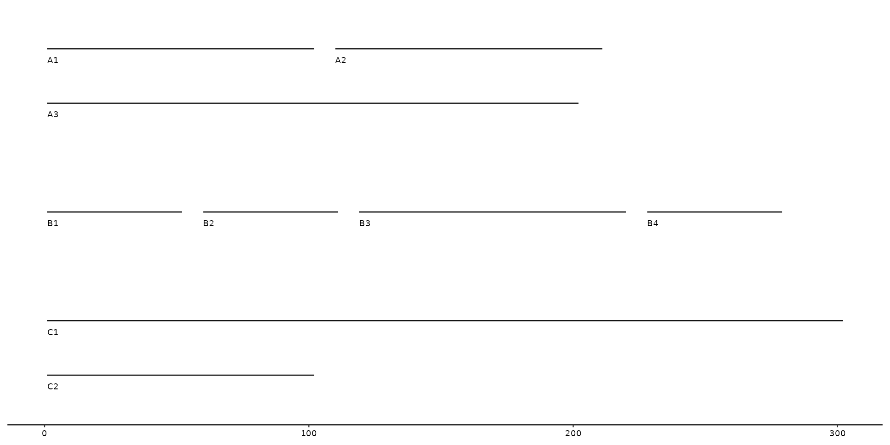
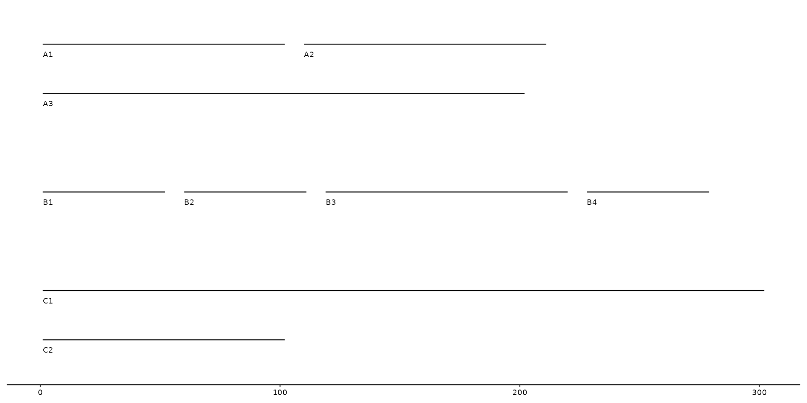

This function will put labels at each individual sequence.
By default it will plot the seq_id as label, but users are able to change this manually.
Position of the label/text can be adjusted with the different arguments (e.g. vjust, hjust, angle, etc.)
geom_seq_label(
mapping = NULL,
data = seqs(),
hjust = 0,
vjust = 1,
nudge_y = -0.15,
size = 2.5,
...
)Arguments
- mapping
Set of aesthetic mappings created by
aes(). If specified andinherit.aes = TRUE(the default), it is combined with the default mapping at the top level of the plot. You must supplymappingif there is no plot mapping.- data
The data to be displayed in this layer. There are three options:
If
NULL, the default, the data is inherited from the plot data as specified in the call toggplot().A
data.frame, or other object, will override the plot data. All objects will be fortified to produce a data frame. Seefortify()for which variables will be created.A
functionwill be called with a single argument, the plot data. The return value must be adata.frame, and will be used as the layer data. Afunctioncan be created from aformula(e.g.~ head(.x, 10)).- hjust
Moves the text horizontally
- vjust
Moves the text vertically
- nudge_y
Moves the text vertically an entire contig/sequence. (e.g.
nudge_y = 1places the text to the contig above)- ...
Other arguments passed on to
layer(). These are often aesthetics, used to set an aesthetic to a fixed value, likecolour = "red"orsize = 3. They may also be parameters to the paired geom/stat.
Details
This labeling function uses ggplot2::geom_text() under the hood.
Any changes to the aesthetics of the text can be performed in a ggplot2 manner.
Examples
# example data
seqs <- tibble(
bin_id = c("A", "A", "A", "B", "B", "B", "B", "C", "C"),
seq_id = c("A1", "A2", "A3", "B1", "B2", "B3", "B4", "C1", "C2"),
start = c(0, 100, 200, 0, 50, 150, 250, 0, 400),
end = c(100, 200, 400, 50, 100, 250, 300, 300, 500),
length = c(100, 100, 200, 50, 50, 100, 50, 300, 100))
# example plot using geom_seq_label
gggenomes(seqs = seqs) +
geom_seq() +
geom_seq_label()
# changing default label to `length` column
gggenomes(seqs = seqs) +
geom_seq() +
geom_seq_label(aes(label=length))
 # with horizontal adjustment
gggenomes(seqs = seqs) +
geom_seq() +
geom_seq_label(hjust = -5)
# with wrapping at 300
gggenomes(seqs=seqs, wrap = 300) +
geom_seq() +
geom_seq_label()

# with horizontal adjustment
gggenomes(seqs = seqs) +
geom_seq() +
geom_seq_label(hjust = -5)
# with wrapping at 300
gggenomes(seqs=seqs, wrap = 300) +
geom_seq() +
geom_seq_label()
